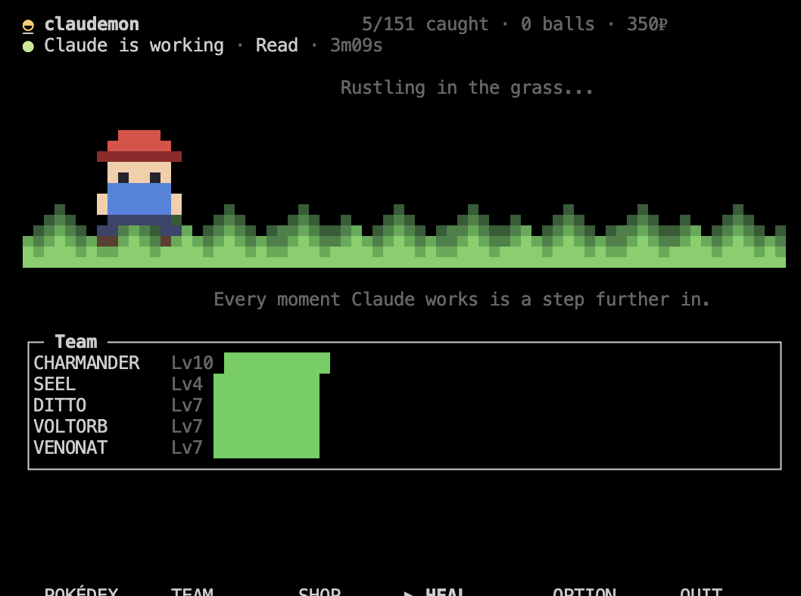
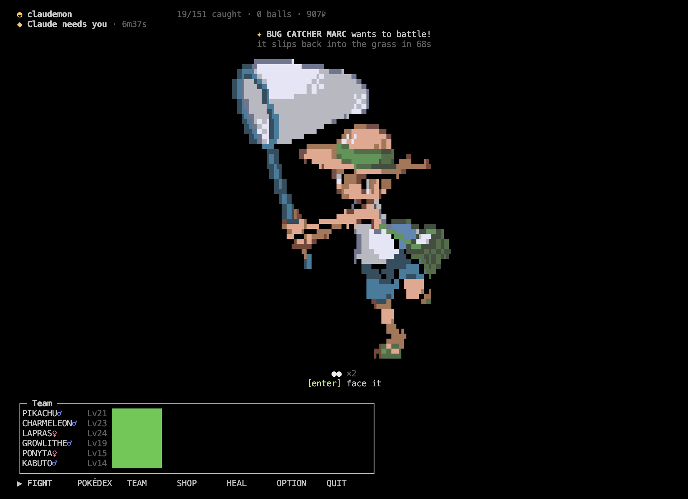
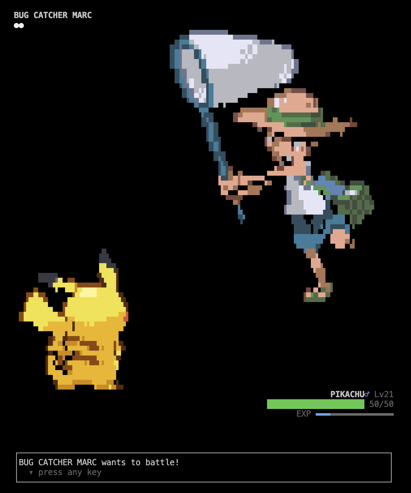
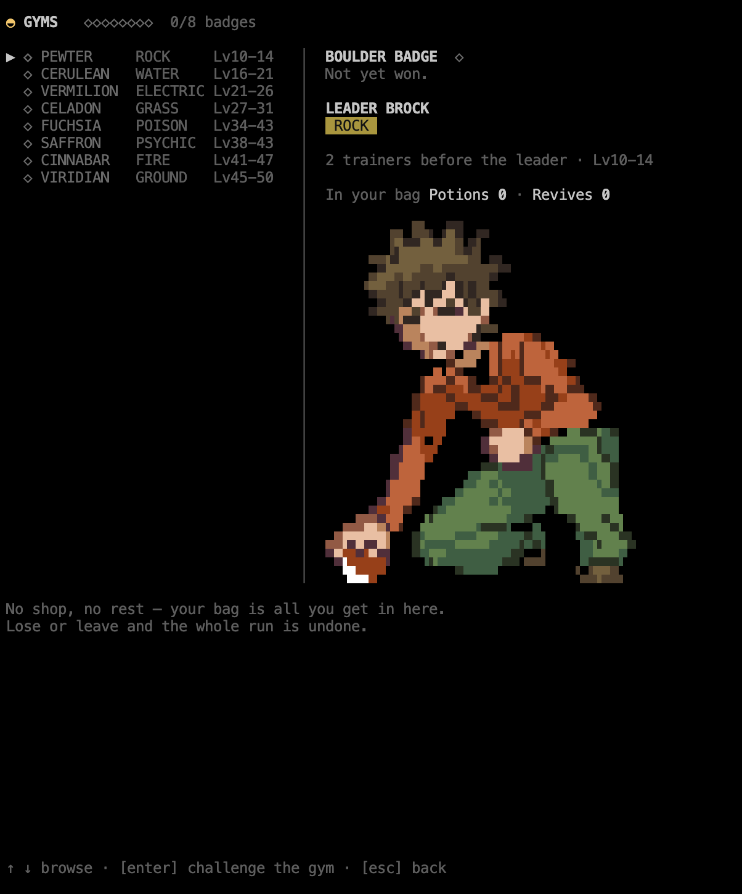
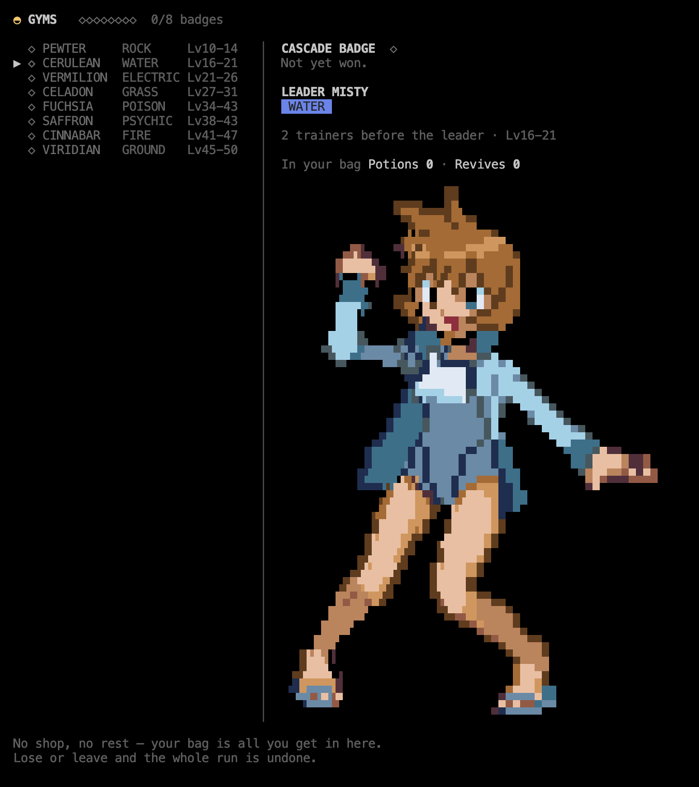
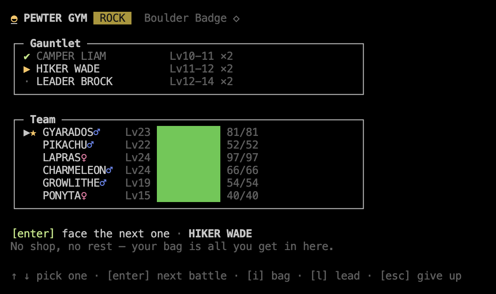
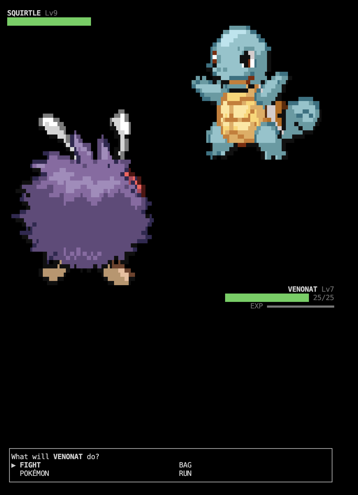
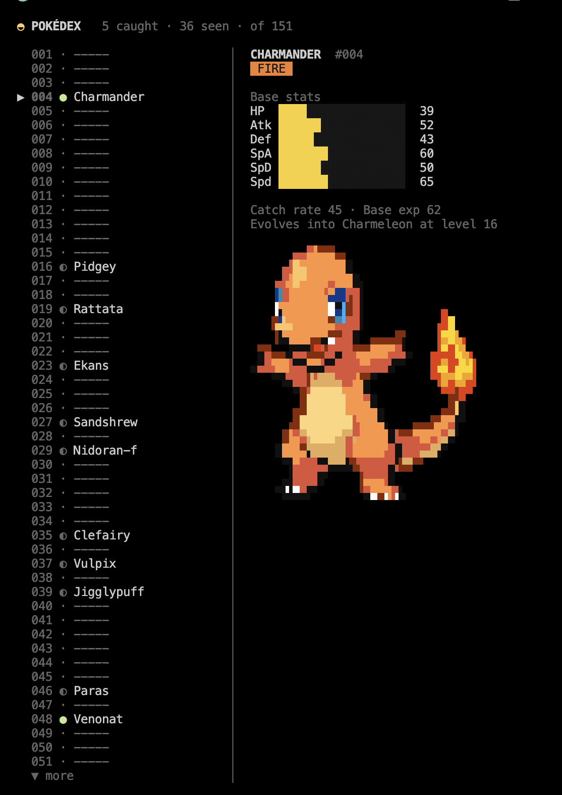
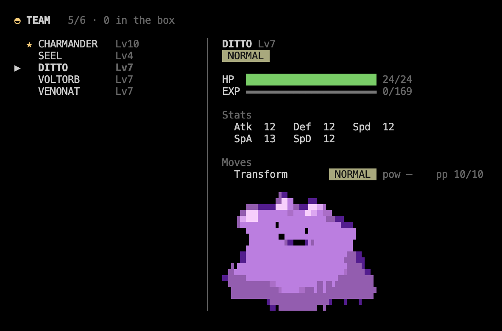
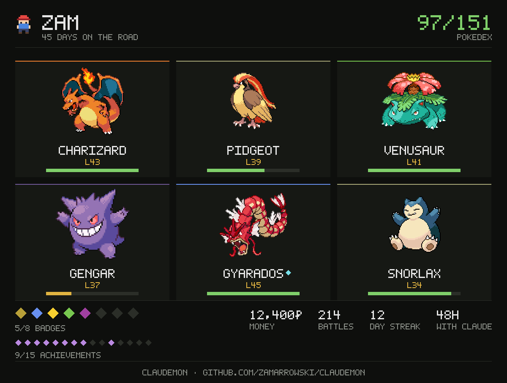

Wild Pokemon appear while you work in Claude Code. Your prompts are steps through the grass — the longer the prompt, the further you walk, and the more chances something jumps out.
> refactor this component
███████░░░░░░░63% left | Opus 5✦ A wild PIDGEY appeared! · 24s left · claudemon
The status line in Claude tells you something is waiting. The game sits in a second terminal tab — that is where you go and fight it.
The idea
The walking happens while Claude does, not the moment you press enter: a prompt buys you the steps and the turn takes them, so anything that jumps out does it with the grass already moving. So is the waiting — every twenty seconds Claude spends working is another step, because that is the half of the session you actually have free.
One at a time, and only for half a minute: a Pokemon that appears while you are busy wanders off if you leave it there, so a long session never leaves a queue of battles waiting for you.
Not everything out there is wild, either. Roughly one step in seven that turns something up turns up a trainer instead — a class, a name and a team behind them, on the same timer as anything else.
And when you would rather go looking for a fight than wait for one, there are the eight gyms: two trainers and then the leader, back to back, with no shop and no rest in between. Nothing is written to disk while you are in there — beat the leader and the badge is yours, lose or walk out or close the terminal and the run is undone, down to the last potion.
The original 151. Fully local — no account, no backend, nothing about you leaving the machine.
Screens

Home — waiting, which is most of it. The walk only moves while Claude does, so you can tell from across the desk without reading anything.

Trainers — sometimes what steps out of the grass is a person. The balls under the sprite are how many Pokemon they are carrying, and the timer runs the same as a wild one: leave them there and they walk off.

Trainer battle — they send out their team one after another, no running and no throwing balls at somebody else's Pokemon. Beating them pays out, and their Pokemon are worth more experience than a wild one.

Gyms — the eight, easiest first, with the type they run, the levels their trainers bring and the badge marked won or not. enter walks in.

Before you walk in — who is waiting, and what you are carrying. The potions in your bag are the potions you get: there is no shop and no healing past that door.

The run — the gauntlet on the way down, your team underneath it and nothing else: i for the bag, l to change your lead, and esc twice to walk out on all of it.

Battle — critical hits, the type chart, status conditions, PP. A ◓ by the foe's name means it is already in your Pokédex.

Pokédex — seen and caught are tracked apart, and the stats fill in for the ones you caught.

Team — details, moves, experience, enter to change your lead, and the box behind it.
The trainer card
Your six, drawn at the size they deserve, over your name, the days you have been at it, the badges in the colour of the type that gave them, the achievements you have earned, and the hours Claude has spent working while you played.

s, on the TRAINER screen — it writes the card, opens it, and leaves you where you were. A shiny is drawn shiny and marked, so the one you spent four thousand encounters on is the one people see. The line along the bottom means the picture carries its own way back here.
Or from a terminal, if you would rather not open the game. --out somewhere.png writes it elsewhere, --no-open leaves the window shut.
claudemon card
Either way it lands in ~/.claudemon/card.png and opens in whatever shows PNGs on your desktop. The game writes the file itself — the same pixel font and palette you see in the terminal, encoded with nothing but node:zlib. No browser, no canvas library, no dependency.
Install
Typed inside Claude Code. Nothing to clone.
Add the marketplace and install the plugin — that puts the hooks that make Pokemon appear in place.
Restart Claude Code. It only picks up a plugin's commands and hooks at startup, so until you restart, the next line does not exist yet.
Run the setup. It installs the claudemon command, the status line and the sprites, printing a line per step and saying so if one of them did not work.
/claudemon-setup
Restart Claude Code once more, so the new status line loads.
In a second terminal tab, run claudemon. It asks for a name and a starter the first time, and after that it sits there waiting.
claudemon
BULBASAUR
CHARMANDER
SQUIRTLE
Then send a longish prompt in the Claude tab and watch the status line.
What you need first
Requirement
How to check
Claude Code
You are already in it
Node.js 20.19+
node --version. The game and the hooks run on it, and Claude Code ships as its own binary so it does not bring one. Nothing else to install — no dependencies, no build step
A truecolor terminal
iTerm2, Ghostty, WezTerm, Kitty, Alacritty and VS Code's terminal are all fine. Not macOS Terminal
Not macOS Terminal. The sprites come out striped and stretched there, and no setting fixes it. Use any of the others.
From a clone instead
For hacking on it, a clone works the same way and takes precedence over the installed copy.
git clone https://github.com/zamarrowski/claudemon
cd claudemon
node tools/install.mjs
The 151 Pokemon ship with the plugin, so the only thing the install downloads is the sprites, which takes a few seconds. Updating and uninstalling are in the README.
What's in it
The original 151, with real base stats, types, catch rates and Red/Blue movesets.
Battles with critical hits, the type chart, status conditions, PP, one-hit KOs, fleeing and switching Pokemon mid-fight.
Catching, where weakening and status genuinely help.
Trainers from nine classes, with a team sized to how far along you are — up to six for an Ace Trainer. They send out one Pokemon after another, you cannot run and you cannot throw a ball at somebody else's Pokemon, and what you get for winning is prize money and half again the experience.
Eight gyms, one per type and ordered by difficulty, each a run of two trainers and then the leader with no way back to the menu in between — and no wild Pokemon interrupting it either. Beat the leader and the badge is yours; lose, give up or close the terminal and the whole run is undone: the experience, the money, the potions and the bruises, as if you had never gone in.
Levelling, learning moves, and evolution by level or by stone.
A Pokédex tracking seen and caught separately and counting how many of each you have faced, a team screen with the box behind it and the bag inside it, and a shop. Items are used on whoever you have picked, which is the only way a stone gets used at all.
A trainer screen holding everything the game has been counting quietly — battles won, lost and run from, the streak of days you have opened it, the hours Claude has worked beside you — and fifteen achievements, from your first catch to the whole Pokédex, each keeping the date you earned it. Once earned they stay earned, so the thirty-day streak is still yours the day you break it.
A line telling you whether Claude is working, which tool it is on and for how long — and a bell when it finishes or gets stuck on a permission prompt, so the game tab is somewhere you can actually sit and wait.
A patch of grass with someone walking through it, who only walks while Claude is working. Something you can catch out of the corner of your eye.
HEAL greyed out for as long as Claude has the keyboard, and a blackout that leaves your team down rather than picking it up. Healing is a rest, and a rest is the half of the session Claude is not using — so a team back at full health is something you pick up in the gaps, not something you farm between two tool calls.
Blips as you move through the menus, and a theme that plays from the first frame of a battle to the last — off in one place if you would rather work in silence.
Controls
Arrow keys move, enter confirms, esc goes back, q quits. Any key advances a battle message. That is the whole scheme — it is the same everywhere.